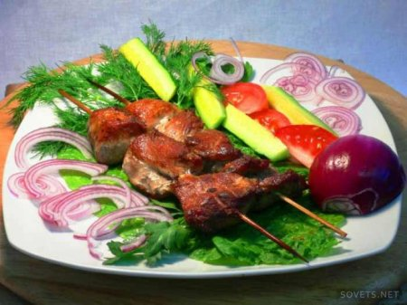

< Меню
Шашлик зі свинини

Інгредієнти:
- Свинина - 2 кг
- Цибуля - 300 г
- Приправа для шашлику - 1 уп.
- Оцет - 250 мл.
- Сіль - за смаком
Приготування:
- Ріжемо м'ясо на кубики середніх розмірів
- Ріжемо цибулю півкільцями. Поміщаємо її в посуд для маринування і злегка перемішуємо, щоб вона дала сік.
- Кладемо до цибулі м'ясо і все перемішуємо.
- Додаємо приправу, перемішуємо.
- Додаємо оцет і знову перемішуємо.
- Залишаємо м'ясо маринуватися години на дві (можна і довше).
- Перед тим як почати нанизувати м'ясо на шампури, солимо його.
- Смажимо шашлик, розташовуючи шампури над розжареним вугіллям.
- Готовий шашлик подаємо з кетчупом або соусом з томатів власного приготування.
- Смачного!!!